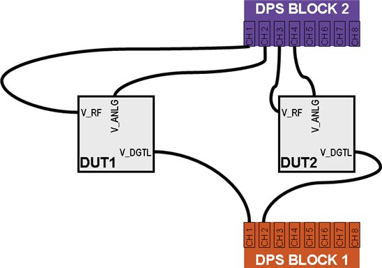
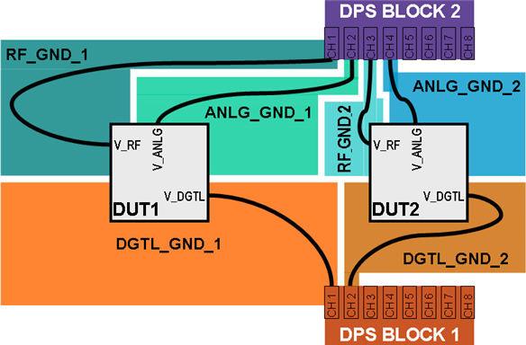
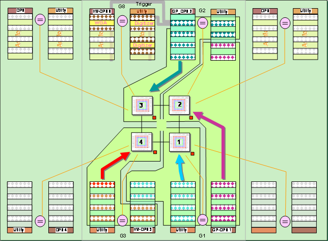
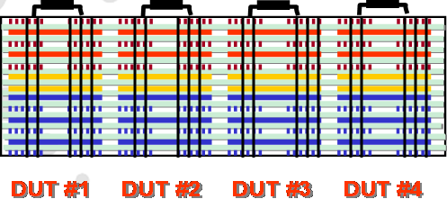

Channel usage in multisite DUT boards
There are three fundamental rules for the DPS channel usage in multisite DUT boards:
- Use separate DPS channels at each site.
- For multisite applications, use separate DPS channels at each site to reduce the potential for noise to couple between sites.
- Use separate DPS blocks for digital and analog/RF signal paths.
- Analog and RF signal paths are more sensitive to noise than digital signal paths. Separate them by using different DPS blocks.
- Use a separate DPS channel for every pin that needs DUT power supply.
- DUT power supply routings are vulnerable to the inadvertent increase of noise levels in critical RF ports and analog pins.
- Voltage spikes from transient current switching of digital circuits can inject additional noise into RF and analog paths.
- Noise on RF and analog supplies degrades the SNR (signal-to-noise ratio).
- Noise generated by a digital circuit can couple to an RF or analog circuit if they use the same supply.
- Separate DPS channels reduce the potential for noise coupling on power supplies between digital, RF, and analog circuits. Thus further improving the prevention of noise propagation even amongst pins from same site.
1. Multisite example
Applying the principles listed above, design SmarTest Work Center routing schemes using copy-and-paste from site to site consistently. This will result in best site-to-site correlation in production DUT boards.
DPS signal layer
First, design the optimum DPS channel distribution scheme for first site. Repeat it accordingly for all other sites. Then design the DPS signal layer connections.

DPS signal and ground layers
Next, design corresponding ground islands in adjacent layers. Best results are achieved with different signal-ground layer pairs for digital and analog/RF type of DPS signals.

To reduce the layer count in the stack-up, one solution is separating copper ground islands by void (metal-free) corridors between them. Use wide voids, usually 0.1 inch or larger is recommended.
2. Multisite example
The concept shown in the prior example should be extended for all the different signal types: DPS, digital, analog, and RF.
- Separate each site with its own grounding structure.
- Use different layers or use the ground island concept.
- If different signal types on same layer, separate them by a 100 mil void path.
- Connect all grounds for each site under or nearby the DUT only, using multiple vias (vertical signal separation).
- Keep grounding for each site separate, specifically the RF and analog grounding (horizontal site separation).
Separation on each layer (horizontal)
Ideally, for best site-to-site separation, sites should be separated by streets of voids - on each layer. This would give the best separation between adjacent sites, thus the least chance for propagation of noise between sites, and ultimately the best correlation of test results between sites. However, in most cases this is not practical or not possible. But at least for top and bottom layers, you should create a full separation for the most critical RF and analog signal paths.

Separation by site location (vertical)
Similar to horizontal separation, sites are separated ideally on all layers of the stack-up. If path voids exist between sites on all layers, the sites are well separated. Sites are truly independent with improved site correlation. Grounding within each site can be achieved by multiple through-board vias, thus creating an independent Faraday-cage structure for each site. For recommended approaches see Grounding.

Functional changes
- Introduced in SmarTest 7.2.0